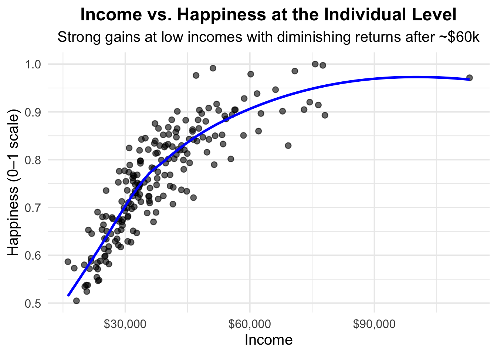

Attaching package: 'dplyr'The following objects are masked from 'package:stats':
filter, lagThe following objects are masked from 'package:base':
intersect, setdiff, setequal, union
Happiness has increasingly been recognized as a critical measure of societal progress, complementing traditional economic indicators such as GDP. While GDP captures material wealth, it does not fully account for the quality of life or well-being experienced by individuals. Across countries and cultures, significant variation exists in reported happiness, even among nations with comparable economic resources. This discrepancy raises an essential question: what drives human happiness, and to what extent is it tied to income?
Income is often assumed to be a primary determinant of happiness. Higher income can alleviate financial stress, improve access to education, healthcare, and leisure, and provide greater opportunities for self-fulfillment. However, the relationship between income and happiness is complex and non-linear. Beyond a certain threshold, additional income contributes progressively less to happiness—a phenomenon known as diminishing marginal utility. Understanding these nuances is crucial for policymakers, economists, and social scientists, as it informs strategies for improving societal well-being.
One of the foundational studies in happiness economics, conducted by Richard Easterlin in the 1970s, observed that within countries, higher income was associated with higher reported happiness. However, across countries, average income did not consistently predict national happiness, a phenomenon now known as the Easterlin Paradox. Subsequent research has refined these observations, indicating that income has a stronger effect on happiness at lower income levels, while other factors, such as social support, governance, and cultural norms, play a more substantial role at higher income levels. This paradox underscores the importance of examining both individual-level and country-level data to capture the full scope of the income–happiness relationship.
Happiness itself is multidimensional. Scholars distinguish between emotional well-being, which reflects day-to-day feelings such as joy, stress, and satisfaction, and life satisfaction, representing a reflective assessment of overall life quality. Emotional well-being tends to plateau at moderate income levels, whereas life satisfaction may continue to rise with additional financial resources. Disentangling these dimensions is crucial for evaluating the broader impact of income and designing policies that target the aspects of happiness that matter most to individuals.
This report addresses the specific question:
Does making more money make people happier, and if so, to what extent?
By examining both individual-level and country-level data, this report contributes to the overarching project question: Which countries are the happiest in the world and why? The analysis investigates patterns, thresholds, and exceptions in the income–happiness relationship, highlighting insights that emerge when combining multiple datasets. Ultimately, this study seeks to quantify the relationship between income and happiness while accounting for the multidimensional nature of well-being.
The primary data source for this analysis is the World Happiness Report, a publicly available dataset providing annual happiness scores for countries worldwide. This dataset is derived from survey responses in which individuals rate their lives on a 0–10 scale. In addition to the overall happiness score, the dataset includes explanatory variables such as GDP per capita, social support, freedom, generosity, health, and perceptions of corruption. GDP per capita serves as a proxy for national income, facilitating cross-country comparisons.
The World Happiness Report surveys thousands of individuals in each participating country using stratified sampling methods to ensure representativeness. Respondents provide ratings of their current life satisfaction, along with responses to questions on social, economic, and institutional factors. This multi-dimensional approach allows researchers to identify both direct and indirect contributions of income to happiness. Importantly, survey-based measures capture subjective well-being, which may differ from purely objective indicators of quality of life.
To complement country-level data, simulated individual-level income and happiness data were generated. Individual-level data allow for a detailed exploration of non-linear effects, thresholds, and diminishing returns that may not be visible in aggregate country-level data. Income values were generated using a log-normal distribution, reflecting the skewed nature of real-world income distributions, and capped at $150,000 to prevent distortion from extreme outliers. Random noise was incorporated to replicate variability found in survey responses, ensuring realistic patterns while maintaining reproducibility.
Several preprocessing steps were undertaken:
The analysis utilizes scatter plots, bar charts, and trend lines generated using the ggplot2 and dplyr packages in R. Visualizations illustrate non-linear effects, thresholds, and heterogeneity across countries and individuals. Logarithmic scaling, color-coding, and annotations highlight important features such as diminishing returns and exceptions to general patterns.
Income influences emotional well-being and life satisfaction differently. Emotional well-being improves rapidly at low-income levels but plateaus once basic needs are met. Life satisfaction continues to rise with income, reflecting broader life evaluations. Understanding these thresholds is critical for policy: modest income increases can have substantial effects on daily happiness, while higher incomes may primarily affect reflective life evaluations.
Attaching package: 'dplyr'The following objects are masked from 'package:stats':
filter, lagThe following objects are masked from 'package:base':
intersect, setdiff, setequal, union
Figure 1: The comparison of median U.S. household income with estimated income thresholds for emotional well-being and life satisfaction reveals important insights into how income shapes different dimensions of happiness. As shown in Figure 1, emotional well-being increases sharply with income up to approximately $70,000 per year, suggesting that attaining basic financial security and the ability to meet essential needs has a substantial impact on daily mood, stress levels, and general life satisfaction. Beyond this threshold, additional income has a relatively small effect on emotional well-being, indicating that once basic needs and moderate comforts are met, other factors such as personal relationships, health, community engagement, and work–life balance play a more significant role in influencing day-to-day happiness. In contrast, overall life satisfaction—which reflects a broader, long-term evaluation of one’s life circumstances—continues to rise until roughly $105,000 per year. This distinction underscores that income affects different aspects of well-being in unique ways: while lower-income households experience large gains in immediate emotional well-being from even modest income increases, higher-income households may require additional non-monetary supports to improve their broader life satisfaction. These findings carry meaningful implications for policy and social planning. Programs that enhance income or provide targeted financial support for low- and middle-income families can yield significant improvements in everyday happiness, whereas efforts to boost overall life satisfaction among higher-income populations may benefit from complementary interventions such as promoting health and wellness, supporting social connections, encouraging work–life balance, and fostering community and civic engagement. Recognizing the multi-dimensional effects of income allows policymakers and organizations to better tailor strategies that maximize both emotional well-being and life satisfaction across diverse income levels, ensuring that resources are used effectively to enhance overall societal happiness.
At the individual level, the effect of income on happiness exhibits a clear pattern of diminishing returns. To explore this, a simulation generated income values with realistic skew and applied a non-linear happiness function. Random noise was added to reflect survey variability.
`geom_smooth()` using method = 'loess' and formula = 'y ~ x'
Figure 2. The relationship between income and individual happiness exhibits a clear pattern of diminishing returns. The figure illustrates that at lower income levels, even modest increases in earnings can produce substantial improvements in emotional well-being and life satisfaction, as individuals gain access to basic needs, financial security, and opportunities for personal growth. However, this effect begins to taper off once income reaches approximately $50,000–$60,000 per year, after which additional income contributes progressively smaller gains in happiness. This non-linear relationship suggests that while financial resources are important for improving quality of life, they cannot fully compensate for other factors that influence well-being, such as social support, health, work–life balance, and cultural values. In practical terms, policies and interventions aimed at boosting happiness should prioritize supporting low- and middle-income populations, where incremental financial improvements have the largest impact, while also addressing non-economic factors that sustain long-term satisfaction and life fulfillment. Moreover, the figure highlights the importance of contextualizing income within broader social and psychological frameworks, demonstrating that wealth alone is not a guaranteed pathway to happiness and that a holistic approach is necessary to understand and enhance individual well-being.
To examine the relationship between income and happiness at the country level, GDP per capita was compared to national happiness scores from the World Happiness Report. Countries were categorized into low, medium, and high-income groups, and a log scale was applied to GDP to better visualize the wide range of incomes.
X Country Happiness.Score Economy..GDP.per.Capita. Family
1 1 Denmark 7.526 1.44178 1.16374
2 2 Switzerland 7.509 1.52733 1.14524
3 3 Iceland 7.501 1.42666 1.18326
4 4 Norway 7.498 1.57744 1.12690
5 5 Finland 7.413 1.40598 1.13464
6 6 Canada 7.404 1.44015 1.09610
Health..Life.Expectancy. Trust..Government.Corruption.
1 0.79504 0.44453
2 0.86303 0.41203
3 0.86733 0.14975
4 0.79579 0.35776
5 0.81091 0.41004
6 0.82760 0.31329Warning in scale_x_log10(name = "GDP per Capita (log scale)"): log-10 transformation introduced infinite values.
log-10 transformation introduced infinite values.
log-10 transformation introduced infinite values.`geom_smooth()` using formula = 'y ~ x'Warning: Removed 1 row containing non-finite outside the scale range
(`stat_smooth()`).Warning: The following aesthetics were dropped during statistical transformation: label.
ℹ This can happen when ggplot fails to infer the correct grouping structure in
the data.
ℹ Did you forget to specify a `group` aesthetic or to convert a numerical
variable into a factor?
Figure 3: shows a scatter plot of GDP per capita versus happiness scores for countries around the world, with points color-coded by income group and a dashed trend line illustrating the overall relationship. The plot reveals a clear positive correlation, indicating that wealthier countries generally report higher happiness scores. However, the trend line flattens at higher GDP levels, demonstrating diminishing returns, where additional income contributes less to happiness in wealthier nations. Notable exceptions exist: some lower-income countries, such as Costa Rica and Bhutan, achieve high happiness due to strong social support and governance, while some high-income countries report lower-than-expected happiness, highlighting the role of cultural, institutional, and social factors. These patterns suggest that income alone does not fully determine happiness and that social networks, trust in government, effective institutions, and work–life balance are also critical. Overall, Figure 3 emphasizes that improving national well-being requires a multi-dimensional approach that goes beyond economic growth to include social, cultural, and institutional considerations.
Income alone does not explain why some countries are happier. By combining this analysis with other project components—such as corruption perception and vacation days—a clearer picture emerges:
This integrated view allows identification of patterns that individual analyses would miss, reinforcing that the happiest countries combine economic resources with supportive social and institutional frameworks.
Several limitations must be acknowledged:
Future analyses could incorporate regression modeling, bootstrapping, or multi-variable causal inference techniques to move beyond correlation. Including panel data or longitudinal surveys would allow stronger causal claims about how income changes affect happiness over time.
This report shows that income is a significant determinant of happiness, but its effect exhibits clear diminishing returns beyond moderate income levels. At the individual level, emotional well-being rises sharply with increases in income among low- and middle-income earners, reflecting the critical role of financial resources in securing basic needs, reducing stress, and providing access to goods, services, and opportunities that directly enhance day-to-day life satisfaction. However, once a household reaches moderate income levels, additional financial gains contribute progressively smaller improvements to emotional well-being, suggesting that factors beyond income—such as social relationships, physical and mental health, work–life balance, and personal fulfillment—become increasingly important determinants of happiness. Life satisfaction, which represents a broader, long-term evaluation of one’s circumstances, continues to benefit from higher income, though at a slower rate, indicating that wealth can still enhance opportunities, personal development, and perceived life stability even after immediate needs are met.
At the national level, GDP per capita explains part of the variation in happiness across countries, but the presence of notable exceptions underscores the critical importance of social, institutional, and cultural factors. Countries that successfully translate economic resources into well-being do so by coupling financial stability with strong social support networks, effective and transparent institutions, low levels of corruption, and policies that promote a balanced lifestyle and healthy work–life integration. Conversely, countries with high GDP per capita but weaker social institutions or lower levels of trust in governance often fail to achieve the happiness levels predicted by their economic wealth alone. This demonstrates that economic prosperity is necessary but not sufficient for fostering collective well-being, and that the broader social and institutional context plays a decisive role in shaping happiness outcomes.
These findings highlight the limitations of policies that focus exclusively on increasing economic growth. While financial development is important, maximizing societal happiness requires complementary strategies that strengthen institutional quality, enhance social safety nets, promote public health and education, and support balanced lifestyles. Interventions that address these non-economic dimensions of well-being can amplify the positive effects of income and help ensure that gains in wealth translate into sustainable improvements in happiness. In summary, while income is undeniably important, money alone does not guarantee happiness; lasting well-being emerges from the interaction of financial resources with social, cultural, and institutional supports that collectively shape quality of life across both individual and national contexts.